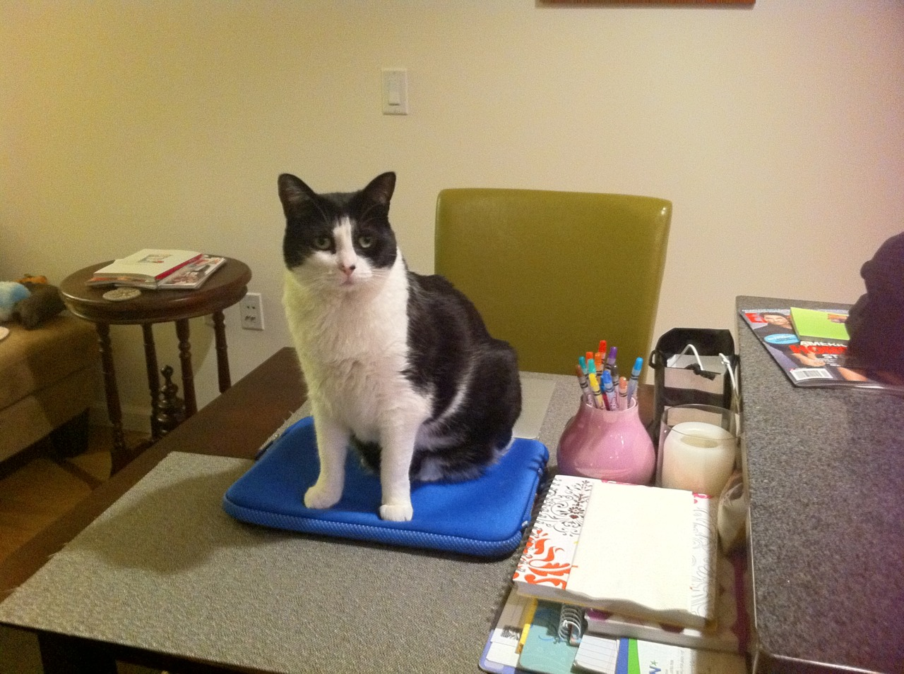

Beelog for Tumblr on the Mac is a perfect Tumblr client. No better way to post to your Tumblr account. Get it on the Mac App Store.

Beelog for Tumblr on the Mac is a perfect Tumblr client. No better way to post to your Tumblr account. Get it on the Mac App Store.

Beelog for Tumblr on the Mac is a perfect Tumblr client. No better way to post to your Tumblr account. It also has great read/reblog support too.

get off of there cat. that is a sleeve for my laptop not a cushion for you butt. and you shouldn’t be on my desk in the first place.
I totally have this problem with my cat.